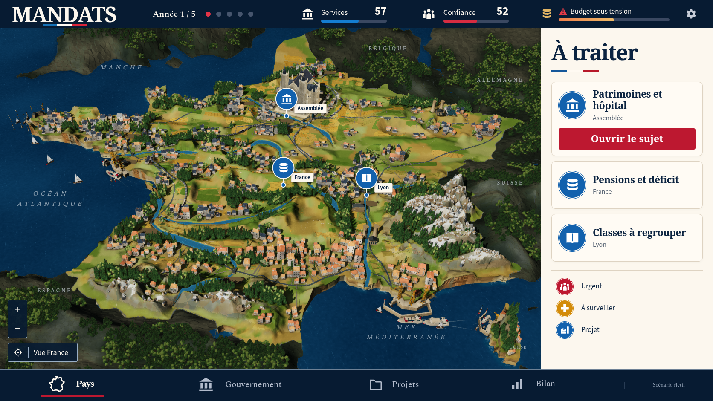
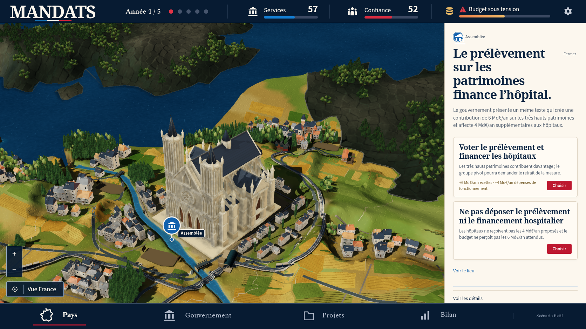
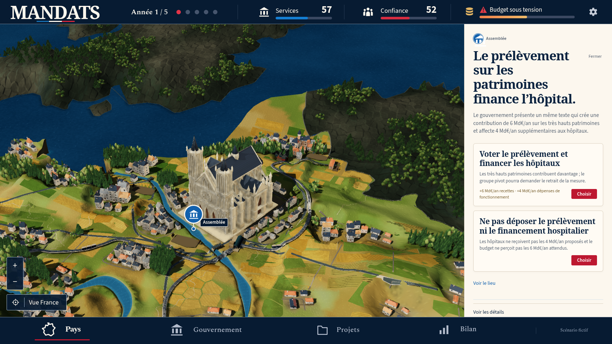
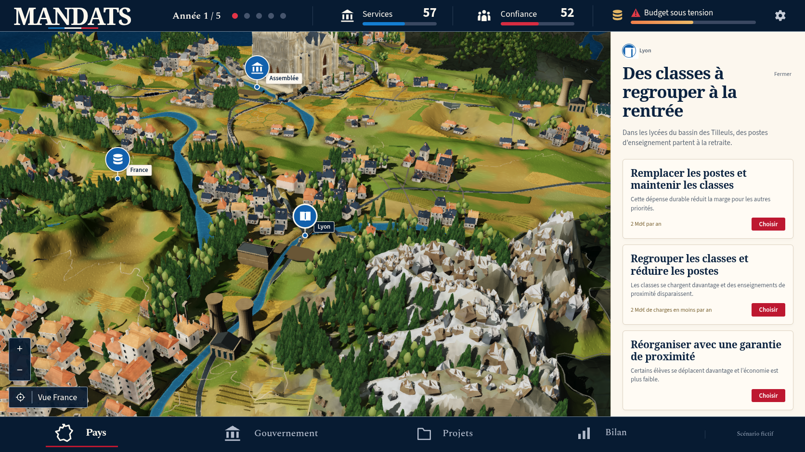
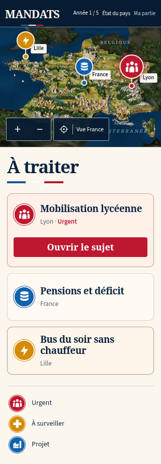
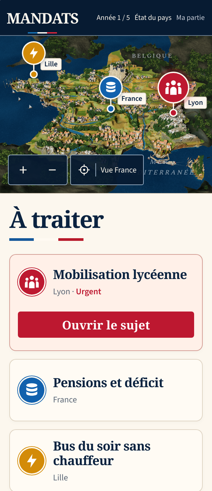
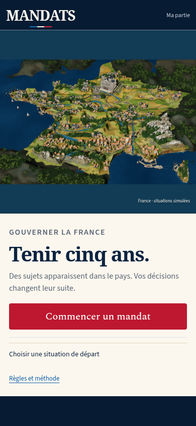
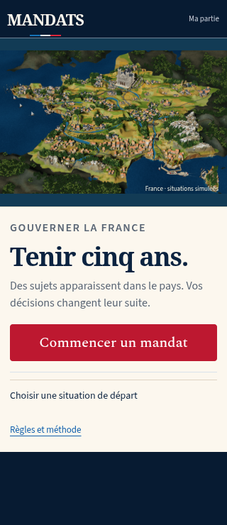

Passe 37 : Non conforme à la maquette
La référence confirmée et le jeu réel
Le rendu37 applique les petites fractures minérales et côtières, les subdivisions agricoles et la pierre sélective de la cathédrale. Les vues réelles restent sensiblement différentes de la maquette : grandes masses et facettes de relief, contexte répétitif, campagne moins fine et moins dense, cathédrale trop massive. Les gardes physiques et captures techniques passent ; les deux contrôles E2E ciblés originaux passent. La suite rework complète échoue sur trois parcours compact/WebKit (reprise15s et durée180s), avec20 réussites et9 skips. Les trois autres suites complètes ne sont pas exécutées.
7 vues réelles, Chromium 151.0.7922.173, 1672 × 941, DPR 1, zéro décision. Erreurs JavaScript : 0 ; requêtes échouées : 0 ; erreurs HTTP : 0 ; avertissements console : 0 ; erreurs console : 0.
Référence confirmée

Vue nationale réelle

Vue nationale37 : composition navy et ivoire conservée ; reliefs, densité rurale et finesse des matières encore différents de la référence.
Conditions et actions · Entrées de partieParis


Paris37 : pierre sélective appliquée, corps et toit du monument encore trop massifs ; arrière-plan de grandes plaques et houppiers arrondis.
Conditions et actions · Entrées de partieSeine et berges


Seine37 : champs à plusieurs tons, petites fermes et rues lisibles ; densité, finesse et contexte encore éloignés de la référence.
Conditions et actions · Entrées de partieLyon et Alpes


Lyon et Alpes37 : roches et neige présentes, grands fronts et facettes restant trop continus et anguleux.
Conditions et actions · Entrées de partieRetour national

Retour national37 réel par les contrôles natifs, zéro décision ; conformité visuelle encore refusée.
Conditions et actions · Entrées de partieÉcarts observés
- L’en-tête bleu nuit, le panneau ivoire et les titres serif gardent la composition générale de la référence ; les nombres et sujets affichés restent ceux du vrai moteur.
- Les champs ont plusieurs tons et de petites toitures, mais les zones rurales restent plus espacées et moins diverses que les villages, vergers et parcelles fines de la référence.
- Les grands fronts alpins et pyrénéens restent anguleux et continus. Les nouvelles incisions géométriques ne suffisent pas à changer leur lecture à l’échelle nationale.
- Le contexte de pays voisins présente un motif de grandes plaques répétées et des houppiers arrondis volumineux, visibles dans les vues Paris et nationales.
- Le corps de la cathédrale et son toit restent disproportionnés et moins fins que le monument de la maquette. La pierre sélective ne résout pas cette différence de forme.
- La mer, les côtes et les ports restent moins riches en écume et en bateaux que la référence.
- Le retour national réel retrouve la carte sans dépenser de décision ; les captures n’établissent pas la fidélité artistique ni une cadence GPU.
Preuves de capture · Build réellement servi · Revue enregistrée
Suite complète et parcours mobiles
La suite rework originale termine avec 20 tests réussis, trois échecs et neuf omissions prévues. Les reprises DPR2 compact et WebKit échouent au délai de 15 secondes ; le mandat complet compact dépasse 180 secondes. Les contrôles ciblés réussis sont conservés séparément. Social, header et test:mandats ne sont pas exécutés après cet arrêt.
Reçu consommé · Résultat complet · Rapport Playwright · Journal · Traces conservées et SHA · Lecture des captures







Contrôles complémentaires conservés séparément
Le profil compact instrumenté rejoint le renderer dans son attente originale de 15 secondes : le clic Reprendre dure 7,852 secondes avant cette attente, qui dure ensuite 10,462 secondes. Cette réussite distincte ne remplace aucun des trois échecs de la suite complète.
Résumé du profil · Reçu réel · Provenance et limites
Le contrôle complémentaire de l’accueil passe six cas avec ses propres attentes natives bornées. Root a effectivement ouvert huit images ; le verdict artistique reste non conforme. Le pied de page de la capture directe est partiellement coupé.
Six cas réellement exécutés · Reçu réel · Huit images examinées et limites



